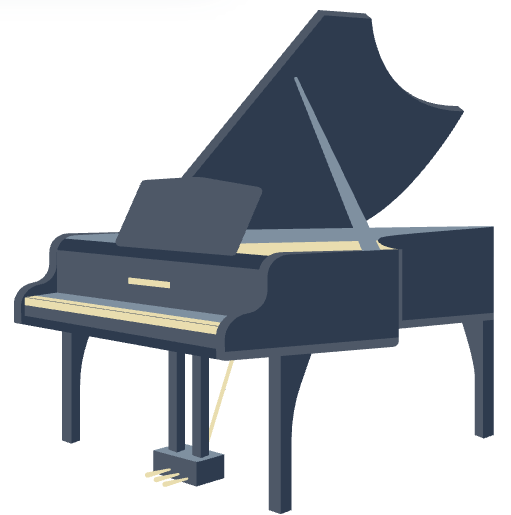
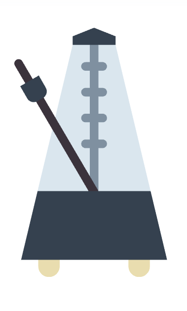

Sheet Music
Explore beginner pieces, expressive intermediate repertoire, and seasonal selections.
Download Beginner PDFs · Explore Intermediate Works · Holiday Favorites

Listening Library
Curated playlists and performances to inspire phrasing, tone, and musical imagination.
Spotify: Classical Essentials · YouTube: Student Performances · Listening Prompts
Practice Tools
Printable logs, warm-up guides, and interactive apps to support consistent growth.
